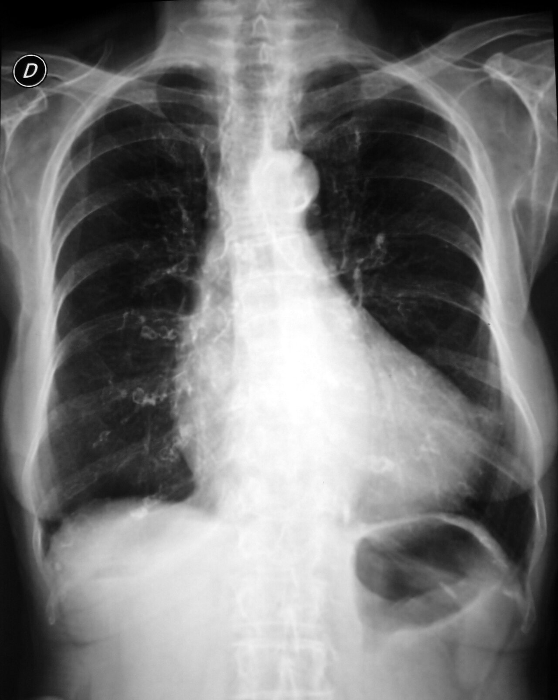

Ficha del catálogo
Insuficiencia cardiaca congestiva
- Sistema
- Cardiovascular
- Modalidad
- RX
- Región
- Tórax
- Dificultad
- Básico
Es el síndrome en el que el corazón no logra mantener un gasto adecuado, con aumento de las presiones de llenado y congestión venosa pulmonar y sistémica. Se manifiesta con disnea de esfuerzo, ortopnea, disnea paroxística nocturna y edema periférico. La radiografía de tórax es la primera herramienta para valorar el grado de congestión y descartar otras causas de disnea.
Técnica
Se prefiere la radiografía posteroanterior en bipedestación e inspiración profunda, complementada con proyección lateral. En el paciente encamado la proyección anteroposterior portátil magnifica la silueta cardiaca y redistribuye el flujo por gravedad, lo que obliga a interpretar con cautela. El ecocardiograma cuantifica la fracción de eyección y define la causa.
Qué observar
- Índice cardiotorácico mayor de 0.5 en proyección posteroanterior
- Redistribución del flujo hacia los lóbulos superiores
- Líneas B de Kerley en las bases y engrosamiento peribroncovascular
- Derrame pleural, con frecuencia bilateral y de predominio derecho
- Opacidades alveolares perihiliares en alas de mariposa
- Dispositivos, catéteres y signos de patología pulmonar concomitante
Hallazgos
La secuencia típica comienza con cardiomegalia y redistribución vascular, sigue con edema intersticial que produce líneas de Kerley, borramiento de los vasos y manguitos peribronquiales, y culmina en edema alveolar con opacidades confluentes perihiliares. El derrame pleural acompaña con frecuencia los estadios avanzados. La respuesta al tratamiento se refleja en la resolución rápida de las opacidades.
Perlas
La congestión pulmonar puede tardar horas en aparecer y en desaparecer respecto al cuadro clínico y a las presiones reales, de modo que una radiografía poco expresiva no descarta descompensación ni una radiografía congestiva obliga a intensificar diuréticos sin correlación clínica.
Diagnóstico diferencial
- Neumonía
- La consolidación suele ser focal, unilateral, con broncograma aéreo y acompañada de fiebre y leucocitosis.
- Síndrome de dificultad respiratoria aguda
- Las opacidades son periféricas y difusas, sin cardiomegalia ni redistribución vascular ni derrame significativo.
- Enfermedad pulmonar intersticial
- El patrón reticular es crónico, de predominio basal y periférico, y no cambia con el tratamiento diurético.
- Derrame pericárdico masivo
- La silueta cardiaca crece en forma de garrafa sin congestión venosa pulmonar proporcional.
Simuladores
- Proyección anteroposterior portátil que magnifica el corazón
- Espiración incompleta que aumenta la trama pulmonar basal
- Rotación del paciente que altera el índice cardiotorácico
Por modalidad
- TC
- Muestra engrosamiento septal liso, vidrio deslustrado en mosaico y derrames, y descarta tromboembolia u otra causa.
- US
- El ultrasonido pulmonar detecta líneas B múltiples y el ecocardiograma cuantifica la función ventricular.
Protocolo
Radiografía posteroanterior y lateral en bipedestación con inspiración máxima, distancia estándar y técnica de alto kilovoltaje. En estudios portátiles se registra la posición y la distancia para permitir comparaciones evolutivas. La comparación con estudios previos es parte esencial del protocolo.
Clasificación
Radiológicamente se describe una progresión en tres etapas: Redistribución vascular, edema intersticial y edema alveolar, que se correlaciona de forma aproximada con presiones capilares crecientes. Clínicamente se emplea la clasificación funcional que gradúa la limitación de la actividad de la clase I a la IV.
Errores frecuentes
- Diagnosticar cardiomegalia en una proyección portátil anteroposterior
- Confundir edema alveolar asimétrico con neumonía
- Ignorar la comparación con radiografías previas

insuficiencia cardiaca edema pulmonar líneas de Kerley cardiomegalia congestión derrame pleural tórax